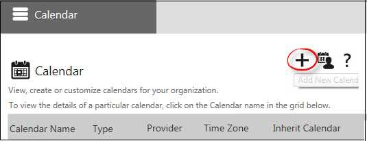
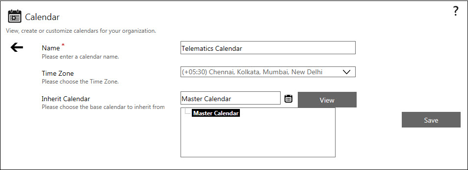
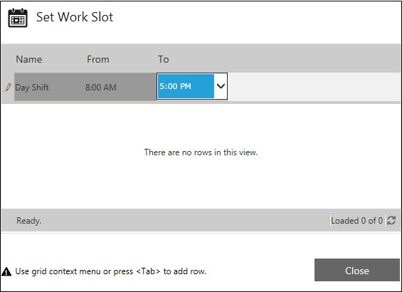
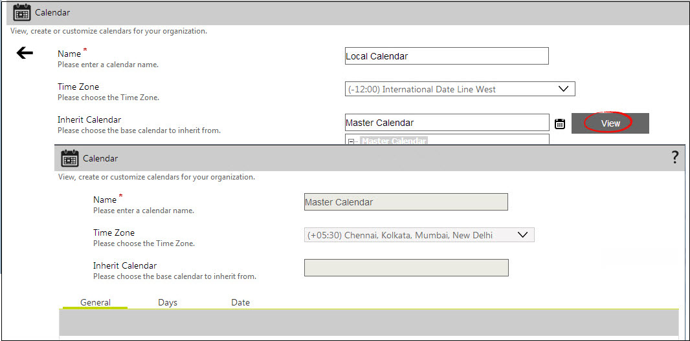

|
|
|
AVEVA Work Tasks Calendar allows you to create multi-level and hierarchical calendars. You can define multiple child calendars that inherit from the parent calendars. For example, in an organization that spans across multiple geographical locations, you can define an organization-wide master calendar. You can define the work hours across the organization using the master calendar. You can create a separate child calendar for each work location to record the unique work hour requirements for that region. The child calendar inherits the settings of the master calendar and can be customized.
Additional levels of customized calendars, that inherit from the respective parent calendars, can be configured in this manner. The lowest level of calendars that can be defined by extending this process are called the Resource Calendars. See, About Resource Calendar.
For more information about configuring Resource Calendars, see Configuration of Resource Calendar by Administrator.
Working with Calendar Control
To Access the Calendar Control
The Calendar Control page appears.
If no calendar has been configured, then only the Add New Calendar button is displayed.
To Add a New Calendar
The Calendar Control page is updated by the fields required to create a new calendar.


Note: When a single provider is configured, then the Provider field is not available. Click save. The calendar Configuration section appears in the same page. Click View List to return to the calendar list view.
To Configure the Calendar
After creating the new calendar you need to configure it with the required parameters. There are three grids in this section - General, Days, and Date.
.
Configuring General Settings
You can set the general work hours for the calendar in the General grid.
You can add more rows for setting shift details by pressing the <Tab> key or using the grid shortcut menu. After making the required work hour settings, click Close.
Configuring Day Settings
You can set the work hours for specific days in the Day grid. For example, you can specify alternative work hours for Saturdays. You can also set Sundays or any other day of the week as the weekly day off.
You can add more rows for setting shift details by pressing the <Tab> key or using the grid shortcut menu. After making all the work hour settings, click Close.
Configuring Date Settings
You can set the work hours for a specific date in the Date grid. For example, you can select a date and set it as a holiday.
To configure Date settings:
You can add more rows for setting the shift details by pressing the <Tab> key or using the grid context menu. After configuring all the work hour settings, click Close to close the window.
Tip: These settings provides a great deal of flexibility in creating new calendars. If you inherit the settings from a parent calendar, you only need to change the parameters that need to be alerted. This saves the time and effort that would otherwise be required for setting all the parameters individually for a calendar.
Configuring a Child Calendar
You can configure a child calendar that will inherit the settings of the specified parent calendar.
To View the Parent Calendar

Inheriting from a Parent Calendar
You can create a new calendar by inheriting properties from an existing parent calendar. If it is not inherited from any parent calendar, the new calendar becomes the parent calendar. Taking the process of inheriting from a top-level calendar further, you can create a hierarchy of calendars.
For example, for an organization that operates in several countries you can have a separate calendar for each country. Under the parent calendar for a country, you can have a number of calendars for each of the region in the country. Under the calendar of each region, you can have a number of calendars for each department. Similarly, within each department calendar, you can have a resource calendar for each user in the department.
Sample Scenario
If a task is assigned to a user and there is no response after five working days (excluding holidays), a timeout reminder should be sent to the user. The following steps can be used to achieve this scenario: